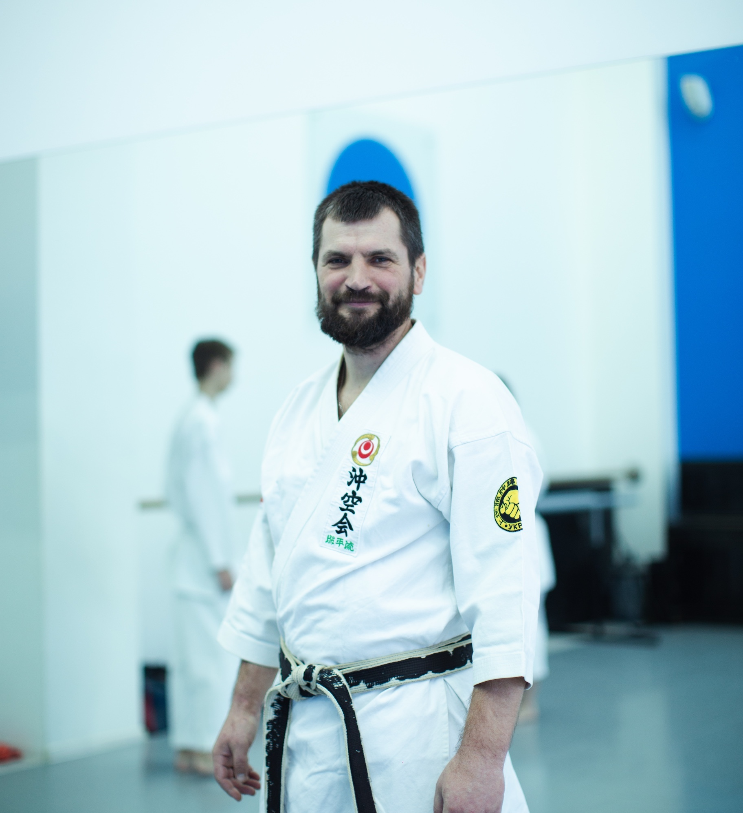

Надбання Білоногого Олега
Білоногий Олег загинув 24 квітня 2025 року на полі бою захищаючи рідних та близьких у війні України проти Росії, за свободу, спокій і безпеку кожного з нас.
Він не просто займався карате — він жив цим мистецтвом. Його шлях був шляхом дисципліни, сили волі й глибокої мудрості. Він був сенсеєм не тільки за званням, а й за покликанням: учителем, який виховував не лише тіло, а й душу своїх учнів.
Його поважали за спокій, терпіння й гідність. Він завжди знаходив правильні слова, підтримував, надихав. Для своїх учнів він був не просто тренером, а наставником, якого пам’ятатимуть усе життя.
Олег вкладав серце в кожне тренування, у кожну настанову. Його сила була в тиші, його авторитет — у доброті, а його шлях — прикладом для тих, хто його знав.
Його вже немає поруч, але все, що він залишив — знання, любов, шлях воїна — живе в кожному з нас.